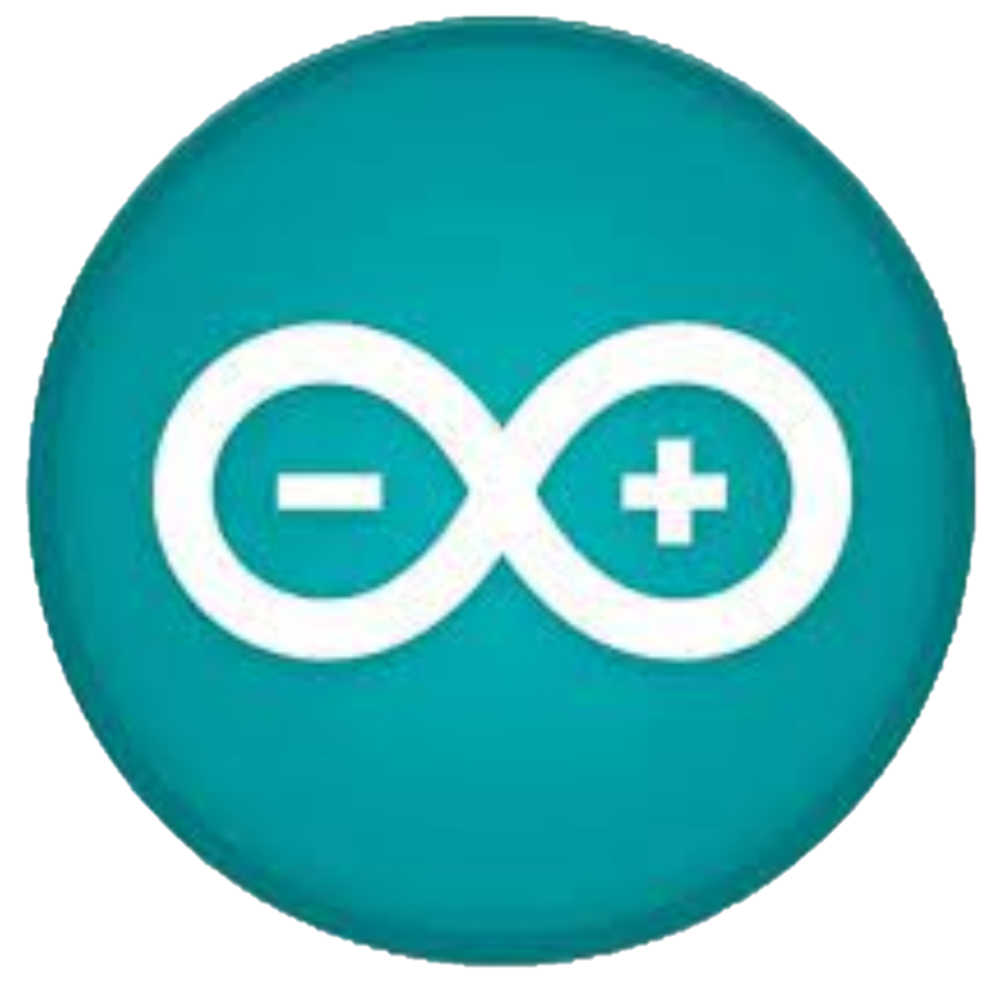
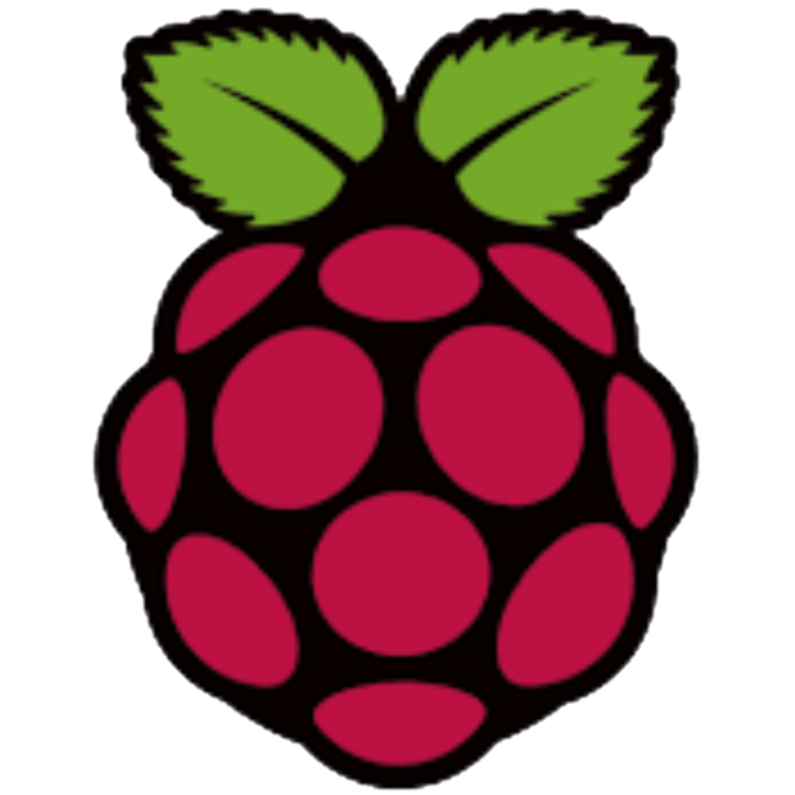

Dorian ###, étudiant en Réseaux & Télécoms 1ère année
Je suis fasciné par toutes les technologies auxquelles on peut avoir accès aujourd'hui, que ce soit logicielles comme matérielles.
J'ai rejoint le BUT Réseaux & Télécommunication car ce sont des domaines qui me passionnent et qui nous entourent. Apprendre en faisant des TP me convient parfaitement car j'ai tendance à mieux comprendre et être davantage intéressé lorque je travaille pour quelque chose de concret et abouti.
Parcours :
- Scolarité
- Seconde mini-entreprise au Lycée ### de ###
- Première STI2D au Lycée ### de ###
- Terminale STI2D avec option Science Informatique et Numérique (SIN) au Lycée ### de ###
- Stages
- Stage à l'entreprise ### de ###
- Stage au service informatique de la ### du ###
- Travail
- Emploi d'été au ### de ###
Centres d'intérêts :
- Modélisation 3D :
- Electronique :
- Arduino
- Raspberry Pi
- CB
- Développement d'un jeu :